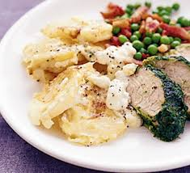

Description
A great side to any meal, extremly versatile!
Serves: 2
Ingredients
- 500g Salad Potatoes
- Salt
- Pepper
- Garlic clove, thinly chopped or pressed
- One shallot, quartered
- Butter
- 100ml Milk
- 150ml Single or Double Cream
- 50-100g grated cheddar cheese
Steps
- Bring a large pan of water up to the boil
- Add the shallot to the pan, and the potatoes for ~18 minutes (just before they would be fully soft)
- Drain the potatoes and shallot, and leave for a few minutes to cool
- Set the oven to 180, and while the oven pre-heats thinly slice the potatoes
- Add the potatoes in a domino formation into a baking dish
- Pour the milk and cream into a jug, and whisk gently. Add this to the dish
- Use a butter knife to spread a few curls of butter into the dish
- Sprinkle pepper, salt, garlic and the cheese on top of the potatoes
- Place the dish into the oven, and bake for 25 minutes until slightly crispy
- Serve with any cooked meat and boiled/steamed veg!